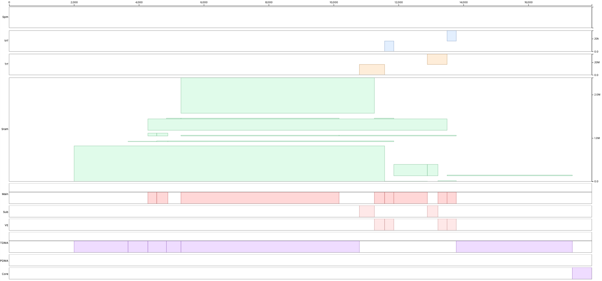
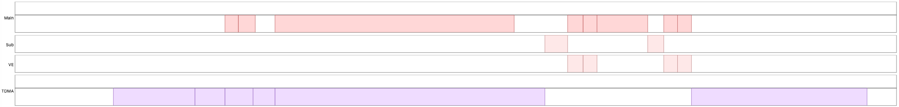
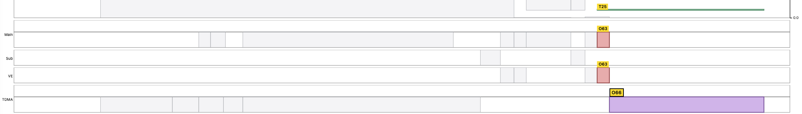
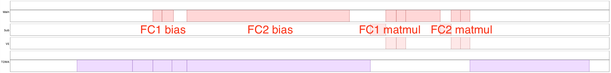
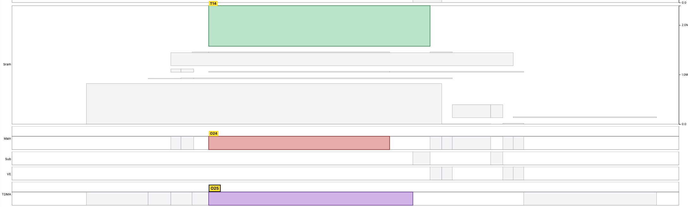
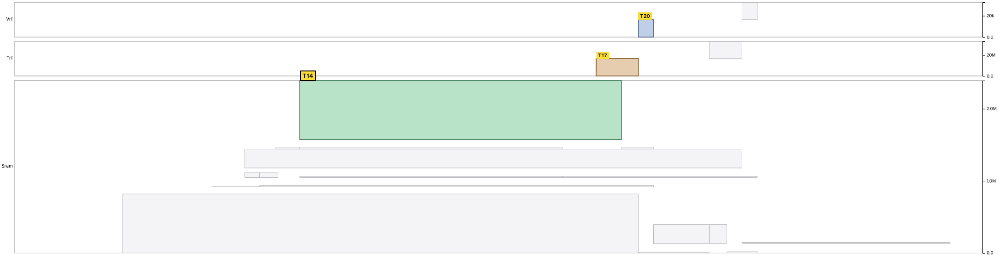

스케줄(Schedule)
스케줄러(scheduler)는 컨텍스트(context), 소스 코드의 순서(source order), 메모리 위치(memory location)를 이용해 연산을 배치합니다. 순차 실행과 같은 결과를 얻는 데 필요한 의존성(dependency)과 자원 제약(resource constraint)을 유지합니다.
실행 컨텍스트(Execution contexts)
공개된 실행 컨텍스트(execution context)는 다음과 같습니다.
- 메인(Main)(
device.main): 주 텐서 유닛(Tensor Unit) 파이프라인을 구동합니다. - 서브(Sub)(
device.sub): 레지스터 파일 사전 적재(register-file preload)와 같은 연산이 사용하는 텐서 유닛 파이프라인의 일부를 구동합니다. - DMA(
device.tdma): HBM, DM, 그 밖의 메모리 계층(memory tier) 사이에서 텐서를 이동합니다.
같은 컨텍스트(context)의 연산들은 순서를 따릅니다. MNIST 스케줄(schedule)에서는 서로 다른 컨텍스트의 연산이 스케줄링 자원(resource)을 공유하지 않고 메모리 의존성(memory dependency)을 위반하지 않으면 겹쳐 실행됩니다. 예를 들어 DMA 적재(load)는 그 값을 사용할 연산이 필요로 하는 시점까지 메인 컨텍스트 연산과 겹칠 수 있습니다.
자원과 뱅크 경합(Resource and bank contention)
- 스케줄링 모델(scheduling model): 스케줄러(scheduler)는 컨텍스트 점유 정보(context occupancy)를 사용합니다. 연산 A가 어떤 컨텍스트(예: 메인)를 점유하면 같은 컨텍스트를 쓰는 다음 연산 B는 A가 끝날 때까지 기다립니다. 각 연산이 어느 컨텍스트를 점유하는지 알면 병렬 실행(parallel execution)을 예상할 수 있습니다.
- 컴파일러의 스케줄링 동작(compiler scheduling behavior): 텐서 유닛(Tensor Unit) 연산이 64회 접근 제한(64-access limit)을 위반할 가능성이 있으면, 컴파일러는 해당 연산이 DMA를 점유하는 것처럼 스케줄링하여 DMA의 동시 실행을 막습니다. 데이터 준비와 연산을 병렬화하는 TCP 구조의 메인·서브·DMA 컨텍스트 병렬성(context parallelism)을 일부 포기하는 대신 심각한 하드웨어 리셋(hardware reset)을 피합니다. 이를 필수 제약(hard constraint)으로 취급하세요. 같은 뱅크(bank)에 연속 64회 이상 접근하는 패턴은 사용하지 마세요.
- 64회 접근 제한(64-access limit)의 세부 내용:
- 이 제한은 누적 기준입니다. 명령(command)들이 교차 실행되어도 접근 횟수는 합산되므로, 모든 엔진에서 같은 뱅크(bank)에 접근하는 총횟수가 64보다 작아야 합니다. 예를 들어 main 30회 + sub 20회 + DMA 1회 = 51회는 안전하지만, main 30회 + sub 35회 + DMA 1회 = 66회이면 기아(starvation)가 발생합니다.
- 컴파일러(compiler)는 각 명령(command)의 같은 뱅크 연속 접근을 64회 미만으로 유지합니다. 하지만 여러 명령이 동시에 실행될 때 총합이 64에 도달하는 것까지 막을 수는 없습니다.
- 실제로 서브 컨텍스트(sub-context)가 같은 뱅크(bank)를 연속 접근하는 경우는 드뭅니다.
StoTrf·StoVrf연산은 보통 연속 주소(sequential address)를 사용하고, 타일링(tiling)이 같은 뱅크의 연속 접근을 피하게 하기 때문입니다. - 제한을 넘는 서브 컨텍스트(sub-context) 연산도 DMA와 동시에 스케줄(schedule)되지 않습니다.
- 메인·서브 컨텍스트 경합(main/sub-context contention): 메인 컨텍스트가 서브 컨텍스트를 기아(starvation) 상태에 빠뜨릴 수 있지만, 그 영향은 덜 심각합니다.
- DMA 기아(starvation)와 달리 서브 컨텍스트 기아는 NoC 시간 초과(timeout)나 하드웨어 리셋(reset)을 일으키지 않으며 처리 시간만 늘립니다.
- 충돌 확률도 낮습니다. DMA 엔진(DMA Engine)은 뱅크(bank) 16개를 한 번에 점유하지만, 서브 가져오기·저장 엔진(sub fetch/commit engine)은 뱅크 하나만 점유합니다.
- 같은 컨텍스트(context)의 가져오기(fetch) 엔진과 저장(commit) 엔진 사이에는 파이프라인 역압력(pipeline back-pressure) 덕분에 기아(starvation)가 발생하지 않습니다.
- 성능 영향 예(performance impact example): 서브 컨텍스트의 stos 명령이 스케줄된 동안 메인 컨텍스트의 exec 명령이 특정 뱅크(bank)를 계속 접근하면, 서브 컨텍스트 처리가 지연됩니다. 최악의 경우 전체 시간 = 메인 컨텍스트 시간 + 서브 컨텍스트 시간입니다. 이상적으로 두 컨텍스트가 서로 다른 뱅크를 접근하면 전체 시간 = max(메인 컨텍스트 시간, 서브 컨텍스트 시간)이 됩니다.
연산 순서와 의존성(Operation order and dependencies)
스케줄러(scheduler)는 독립적인 연산의 순서를 조정하여 겹쳐 실행할 기회를 만들 수 있습니다. 순서 변경으로 값이 달라질 수 있다면 의존성(dependency)이 재배치를 막습니다. 소스 코드에 적힌 순서만 보고 성능이 좋아졌다고 판단하지 마세요. 생성된 스케줄(schedule)을 확인하고 튜닝 절차(tuning protocol)에 따라 전체 완료 시간(makespan)을 비교하세요.
텐서 유닛(Tensor Unit) 연산은 HBM 텐서(tensor)를 직접 사용할 수 없습니다. 데이터는 빠른 시작(Quick Start)에 설명한 메모리 계층(memory tier)을 거쳐야 합니다. 컨텍스트(context)들이 메모리 위치를 공유하므로 스케줄러(scheduler)는 다음 위험 관계(hazard)를 보존해야 합니다.
- 쓰기 후 읽기(read after write): 값을 사용하는 연산은 그 값을 만드는 연산의 쓰기가 끝날 때까지 기다립니다.
- 읽기 후 쓰기(write after read): 나중에 쓰는 연산은 앞선 읽기 연산들이 끝날 때까지 기다립니다.
- 쓰기 후 쓰기(write after write): 겹치는 위치에 쓰는 연산들은 프로그램 순서(program order)를 유지합니다.
이 위험 관계(hazard) 때문에 서로 다른 종류의 연산을 수행하는 독립 컨텍스트(context)도 때로는 기다려야 합니다.
서로 다른 컨텍스트(context)라도 같은 스케줄링 자원(scheduling resource)이 필요하면 직렬화(serialize)됩니다. 예를 들어 메인 컨텍스트의 벡터 엔진(Vector Engine) 연산과 서브 컨텍스트의 벡터 엔진 연산은 해당 자원을 동시에 점유할 수 없습니다. 튜닝 방법(tuning lever)을 고르기 전에 진단(diagnosis)에서 이 자원 대기(resource wait)를 데이터 의존성(data dependency)과 구분해야 합니다.
MNIST 예제는 첫 층에 ReLU를 적용하는 2층 MLP의 스케줄(schedule)을 제공합니다. 스케줄 그림은 컨텍스트(context) 간 실행 겹침(overlap)과 대기(wait)를 보여 줍니다.
도식 소스 보기
flowchart LR
X["Input<br>(X = 800)"]
H["Hidden<br>(H = 256)"]
C["Output<br>(C = 16)"]
X -- "FC1 + ReLU" --> H
H -- "FC2" --> C
장치 함수(device function)는 소스 코드 순서대로 두 층(layer)을 호출합니다. 각 층은 연산 경로(compute path)가 요구하는 메모리 계층(memory tier)에 피연산자(operand)를 준비합니다.
axes![X = 800, H = 256, C = 16];
type Chip = m![1];
type Cluster = m![1 # 2];
#[device(chip = 1)]
pub fn forward(
device: &mut Device,
input: &HbmTensor<bf16, Chip, m![X]>,
fc1_weight: &HbmTensor<bf16, Chip, m![H, X]>,
fc1_bias: &HbmTensor<bf16, Chip, m![H]>,
fc2_weight: &HbmTensor<bf16, Chip, m![C, H]>,
fc2_bias: &HbmTensor<bf16, Chip, m![C]>,
) -> HbmTensor<bf16, Chip, m![C]> {
let hidden = fc1_relu(device, input, fc1_weight, fc1_bias);
fc2(device, hidden, fc2_weight, fc2_bias)
}
각 완전연결층(fully connected layer)은 행렬·벡터 곱(matrix-vector product)을 계산하고 편향(bias)을 더합니다. 첫 층은 같은 처리 단계(pass) 안에서 ReLU도 적용합니다.
다음은 전체 스케줄(schedule)입니다. 이어지는 그림은 컨텍스트(context)와 의존성(dependency)의 동작을 확대하여 보여 줍니다.



MNIST 스케줄(schedule)에서는 오래 걸리는 입력 가져오기(input fetch)가 진행되는 동안 편향 준비(bias preparation)가 행렬·벡터 연산(matrix-vector operation)에 앞서 수행될 수 있습니다.



device.main): drives the main Tensor Unit pipeline.Sub (device.sub): drives the subset of the Tensor Unit pipeline used by operations such as register-file preloads.DMA (device.tdma): drives tensor movement between HBM, DM, and other memory tiers.Operations in one context are ordered.
In the MNIST schedule, operations in different contexts overlap when they do not share a scheduling resource or violate a memory dependency.
For example, a DMA load overlaps main-context computation until the consumer needs the loaded value.Resource and bank contentionScheduling model: The scheduler uses context occupancy information: if operation A occupies a context (e.g., main-context), the next operation B using that context waits until A completes.
Understanding which contexts operations occupy enables predicting parallel execution.Compiler scheduling behavior: When Tensor Unit operations would violate the 64-access limit, the compiler schedules them as if they occupy DMA, preventing concurrent DMA operations.
This sacrifices the TCP architecture's inherent main/sub/DMA context parallelism where data preparation and computation occur in parallel, but avoids catastrophic hardware resets.
Treat this as a hard constraint: never use patterns with 64+ consecutive same-bank accesses.The 64-access limit details:The limit is cumulative: total accesses from all engines to the same bank must stay below 64, since even interleaved accesses across commands accumulate toward this total.
For example, main: 30, sub: 20, DMA: 1 totals 51 (safe), but main: 30, sub: 35, DMA: 1 totals 66 (triggers starvation).The compiler keeps each individual command below 64 consecutive same-bank accesses, but cannot prevent the total from reaching 64 when multiple commands run concurrently.In practice, sub-context rarely accesses the same bank consecutively (StoTrf, StoVrf operations typically use sequential addresses and tiling prevents same-bank access).Sub-context operations that would exceed the limit are also not scheduled concurrently with DMA.Main/sub-context contention: Main-context can starve sub-context, but this is less severe:Unlike DMA starvation, sub-context starvation does not cause NoC timeout or hardware reset and only increases processing time.Collision probability is lower: DMA Engine occupies 16 banks at once, while sub fetch/commit engines occupy only one bank.Starvation does not occur between fetch and commit engines within the same context due to pipeline back-pressure.Performance impact example: If main-context exec command continuously accesses a specific bank while sub-context stos command is scheduled, sub-context processing is delayed.
Worst case: total time = main-context time + sub-context time.
Ideal case: main and sub access different banks, achieving total time = max(main-context time, sub-context time).Operation order and dependenciesThe scheduler may order independent operations to expose overlap.
A dependency prevents reordering when the changed order could alter a value.
Do not infer a performance improvement from written source order.
Inspect the emitted schedule and compare its makespan under the tuning protocol.Tensor Unit operations cannot consume HBM tensors directly.
Data must move through the memory tiers described in Quick Start.
Memory locations are shared by contexts, so the scheduler must preserve these hazards:Read after write: a consumer waits for the producer's write.Write after read: a later writer waits until earlier readers finish.Write after write: overlapping writes retain their program order.These hazards explain why independent contexts sometimes wait even when their operation types differ.Different contexts still serialize when they require the same scheduling resource.
For example, a main-context Vector Engine operation and a sub-context Vector Engine operation cannot occupy that resource simultaneously.
A diagnosis must distinguish this resource wait from a data dependency before choosing a tuning lever.The MNIST example provides a schedule example for a two-layer MLP; its first layer applies ReLU.
Its schedule images show context overlap and waits:The device function calls the two layers in source order.
Each layer prepares its operands in the memory tier required by its compute path:axes![X = 800, H = 256, C = 16];
type Chip = m![1];
type Cluster = m![1 # 2];
#[device(chip = 1)]
pub fn forward(
device: &mut Device,
input: &HbmTensor<bf16, Chip, m![X]>,
fc1_weight: &HbmTensor<bf16, Chip, m![H, X]>,
fc1_bias: &HbmTensor<bf16, Chip, m![H]>,
fc2_weight: &HbmTensor<bf16, Chip, m![C, H]>,
fc2_bias: &HbmTensor<bf16, Chip, m![C]>,
) -> HbmTensor<bf16, Chip, m![C]> {
let hidden = fc1_relu(device, input, fc1_weight, fc1_bias);
fc2(device, hidden, fc2_weight, fc2_bias)
}